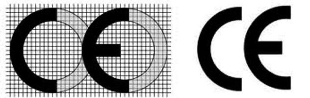

Table of Contents
- 1. Pytatania jakie mogą być na egzaminie
- 1.1. Oapowiedzilność pracodawcy za nie przestrzeganie BHP?
- 1.2. bezpczeństwo techniczne
- 1.3. Higiena pracy
- 1.4. Prawna ochrona pracy
- 1.5. Czym się różni European conformance CE mark od China export
- 1.6. Organy nadzoru nad warunkami pracy
- 1.7. Trójkąt ochrony pracownika
- 1.8. Podstwowe parametry miejsca pracy
- 1.9. Kiedy pracodwaca zapenia pracownikom pomiesczenie do odpoczynku
- 1.10. Efekty z ergonomii
- 1.11. Czynniki materialnego środowiska pracy
- 1.12. Czynniki antroptechniczne
- 1.13. Na podstawie czego rozróżnami elementy sterownicze
- 1.14. Co to jest centyl? / co student rozimie przez stosowanie zasad mair ograniczających
- 1.15. Jakim wymiarom odpowiada 50 centylowa kobieta w stosunku do męszczyzn?
- 1.16. Co to jest dobrostan?
- 1.17. Maksylamny wydatek energetyczny u kobiety, u mężczyzny.
- 1.18. Podaj przykład pracy z obciązeniem statycznym
- 1.19. Podstawowe parametry stanowiska pracy
1. Pytatania jakie mogą być na egzaminie
1.1. Oapowiedzilność pracodawcy za nie przestrzeganie BHP?
- mandat od 500 do 5000zł
- kara grzywny w wysokości od 1000zł do 30000zł
- art 220 pozbawienie wolności do lat 3.
1.2. bezpczeństwo techniczne
- obiekty, pomiesczenia pracy
- maszyny, narzędzia, i urządzenia techniczne
- energetyka, transport, procesy technologiczne
- materiały i surowce
- dokumentacja:
- budowlana
- techniczna
- ruchowa
- instrukcjie
1.3. Higiena pracy
- higiena pomieszczeń pracy
- higiena pomiesczeń technologicznych
- higiena osobista pracowników
- zaplecze sanitarno higieniczne
- środki higieny i zapezpieczenia higieniczne
1.4. Prawna ochrona pracy
- ochrona stosunku pracy
- ochrona wynagrodzenia
- ochrona warunków pracy
- ochrona organizacji w pracy
- ochrona pracy kobiet i młodocianych
- ochrona świadczeń prcowniczych
1.5. Czym się różni European conformance CE mark od China export
Trzeba narysować

Figure 1: Po lewej EU, po prawej China export
1.6. Organy nadzoru nad warunkami pracy
- Państowy
- sanepid
- państwowa inspekcja pracy
- urząd dozoru technicznego
- państwowa straż pożarna
- ochrona środowiska
- Społeczny
- związki zawodowe
- społeczna inspekcja pracy – zakładowy społeczny inspektor pracy
1.7. Trójkąt ochrony pracownika
od najmniej ważnych
- Środki ochrony indywidualnej
- środki chorny organizacyjnej
- środki ochrony zbiorowej
- środki techniczne
1.8. Podstwowe parametry miejsca pracy
1.8.1. wysokość
co najmniej 330cm,
- powieszchnia
- dwa m2 wolnej powiesznich podłogi
1.8.2. Oświetlenie
1.8.3. Pomieszczenie bez okien wymagania:
- klimpatyzacja.
- zgoda sanepidu.
- zgoda inspekcji pracy.
1.8.4. Gdize nie wolno stosować wentylacji mechanicznej
w pomieszczniach z paleńskiami na paliwo stałe, płynne lub urządzeniami gazowymi pobierające powietrze do spalania z pomieszczenia z grawitacyjnym odoprwadzeniem spalin przewodem stsowanie wentylacji mechanicznej jest zabronione.
1.8.5. Kiedy pracodwaca zapenia pracownikom pomiesczenie do ogrzwania się
1.9. Kiedy pracodwaca zapenia pracownikom pomiesczenie do odpoczynku
- jeżeli zatrudnia pracowników w pomiesczeniach ciasnych lub niskich
- jeżeli zatrudnia pracowników w 30+ s c
1.9.1. jakie warunki spełnia
- klimatyzownae
- mieć miejsca siedzące
1.10. Efekty z ergonomii
- zmniejszenie znaczenia różnic indywidualnych, tzn. im bardziej cechy maszyn, urządzeń i narzędia są przystosowane do możliwości człowieka.
- zmniejszenie zmęczenia pracą
- zwiększenie wydajności pracy
- zapobieganie patologicznym skutkom wykonywania pracy, ograniczenie ilości chorób zawodowych.
- zmniejszenie liczby wypadków przy pracy
1.11. Czynniki materialnego środowiska pracy
- Oświetlenie
- Hałas, Drgania
- temperatura, wlgotność, ciśnienie, ruch powietrza, promieniowanie cieplne
- pył albo związek chemiczny
1.12. Czynniki antroptechniczne
- Postwa przy pracy.
- Rytm i tempo pracy.
- Przerwy w pracy.
1.13. Na podstawie czego rozróżnami elementy sterownicze
- kształt
- rozmiar
- umejscowienie
- barwa
1.14. Co to jest centyl? / co student rozimie przez stosowanie zasad mair ograniczających
Centyl – jest to punkt dla skali ocen, poniżej którego leży \(N\) % wynikoów.
1.15. Jakim wymiarom odpowiada 50 centylowa kobieta w stosunku do męszczyzn?
1.16. Co to jest dobrostan?
Stan odczuwalny przez operatora podczas zgodnego z porzenaczeniem użytkowania maszyny, jeżeli dsykomofort, zmęcznie fizyczne i obicazenie psychidczne ograniczono do możliwego minimum dzięki uwzględnieniu zasad ergonomicznych
1.17. Maksylamny wydatek energetyczny u kobiety, u mężczyzny.
1.18. Podaj przykład pracy z obciązeniem statycznym
1.19. Podstawowe parametry stanowiska pracy
- 500 lux, biorowe
- pani sprzątająca 100